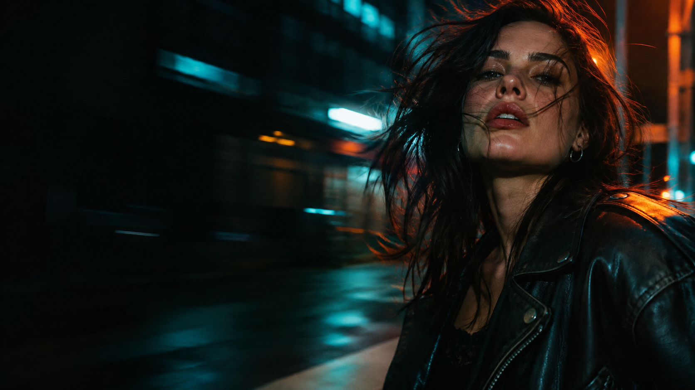

ЛЮДИ / СВЕТ / НАБЛЮДЕНИЯ01 / ЗА КАДРОМ
О МОЕЙ
ФОТОГРАФИИ.
Мне интересно замечать людей: как меняется их взгляд, как они двигаются и чувствуют себя в пространстве. В портретах я ищу естественность, в репортаже — живой момент.
В этом портфолио собраны разные стороны моего взгляда: портретные съёмки, концерты и городские истории. Для меня каждая серия начинается с внимания к человеку и свету.
ОБСУДИТЬ СЪЁМКУ